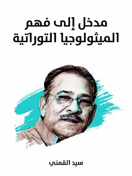

مدخل إلى فهم الميثولوجيا التوراتية

قراءة عربية أصلية محددة النطاق في الصفحات 9 إلى 14 من ملف PDF المرتبط، وليست تلخيصا كاملا للكتاب. نناقش ما تدعمه هذه المقاطع فقط.
تأسيس: العبرانيون قبيلة بدوية إزاء ممالك مركزية
يرسم سيد القمني الصورة التاريخية حوالي منتصف الألف الثانية قبل الميلاد: مصر دولة عظمى منذ خمسة عشر قرنًا، وبلاد العراق انتقلت من نظام الدولة المدينية إلى دولة مركزية كبرى تعاقبت عليها دول السومريين والأكاديين والبابليين والآشوريين، والكنعانيون في فلسطين يتحولون إلى ممالك صغيرة متجاورة بينما يشرع الفينيقيون أشرعتهم على البحر. في هذا الوقت وفدت إلى بادية الشام موجات بدوية متتالية عُرفت بالقبائل الآرامية، وبرزت من بطونها تلك القبيلة التي حطت رحالها عطشى جوعى شرقي فلسطين، وعرفها التاريخ باسم العبرانيين وبني إسرائيل. على العادة البدوية تصوروا إمكان الإغارة كرًا وفرًا وفق أخلاقيات السلب والنهب، لكنهم وجدوا أنفسهم إزاء نظم لم يألفوها: دول وممالك ذات جيوش منظمة وحكومات مركزية، فاستكانوا على حدود الممالك وتعاملوا كمحطات إنذار مبكر مقابل ما تفيض به عليهم من خيرات. ومع الاحتكاك بهذه الحضارات أدركوا مبكرين أن صروح الحضارة لا تخرج من الأرض بلا جذور، وأن قيام الكيانات المركزية يحتاج تماسكًا وتكاتفًا وأول مقوماته الأرض، ومن ثم كان لا بد من أرض.
زاوية وحدود القراءة
قراءة موجزة من ص ٩ إلى ص ١٤ من أصل ٦٠ صفحة، تعرض فصل التأسيس، لا الكتاب كاملًا.
الطبعة والقراءة
هذه النسخة من الكتاب صادرة ومتاحة مجانًا بموجب اتفاق قانوني بين مؤسسة هنداوي والسيد الدكتور سيد القمني.
تنزيل PDF المجاني ↓ القراءة والمصدر الرسمي ↗